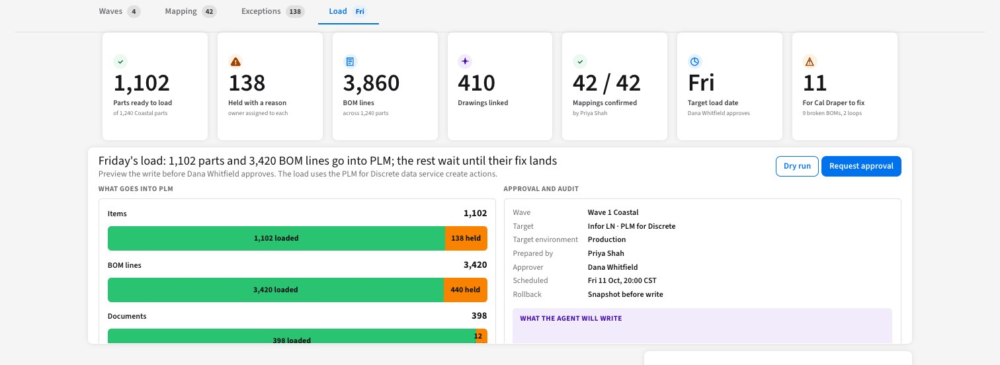

AI at Hunter Fan,
from roadmap to real
What we heard from your team, how PLM for Discrete, LN and AI would fit together, how a use case goes from roadmap to real, 4 use cases built for an Infor demo tenant, and the prototypes we can build together.
What we heard
Your priorities and pains, in your words: Idea to Product and Order to Cash.
2Your AI vision
Everything you raised, on your roadmap, and the goal of all of it in FY27.
3From PLM to AI
How PLM for Discrete, LN and the AI layer would fit, from idea to product.
4From roadmap to real
From an AI Adoption Hub use case card to a live page, with a StarForge prototype where it helps.
5Real in the tenant
4 use cases: what we heard, the live page, and a Demo.
6Prototypes
2 StarForge prototypes: engineering data migration and PLM-first item launch.
7What's next
What we work on together from here.
What we heard
From your AI Adoption Hub entry. Your 2 priorities are Order to Cash and Idea to Product.
Once PLM is deployed, an item would start there with its data filled in, so it can be bought and sold on release.
The feed creates items through the API. Once PLM is deployed, a PLM release would send the item to LN when it is approved.
Review and approval would run in the PLM workflow, next to the data they check.
One page shows what is stuck, for how long, and with whom.
Everything you raised, and the goal: all of it in FY27
Your FY27 to FY29 roadmap, plus what you raised on Tuesday, as 17 use cases under 4 themes.
Unblock revenue
Blocked ordersFY28
- Blocked order resolution
- Credit holds and collections
- Short shipments: ask the customer, then act
PricingFY28
- Item and customer pricing setup
- Always-on watch over pricing and item data
- Proactive pricing: a new item misses a price book
- Price recommendations at the time of sale
Inventory and supplyFY29
- Inventory transfers
- Supply-chain recommendation agent
- Balance stock across warehouses, including a new West Coast site
Give customer service time back
Order status by emailFY27
- A customer emails, an agent checks who they are, looks it up and replies
Order creation by emailFY27
- Orders from email, PDF or Excel, with a review at the end
Customer and vendor setupFY27
- Customer maintenance
- Customer creation
- Vendor creation
Simpler approvalsNo year
- Approvals that branch, so only who is needed sees it
- Act on its own under limits you set
- A workspace per role: sales, credit, service
Shrink the technology footprint
Cash applicationFY28
- Replace today's tool: images, bank statement and open items
Retailer contentNo year
- Attribute cleanup, first
- Retailer content agent, and a path off today's content tool
ForecastingNo year
- Seasonality and replacement products
Online store integrationFY27
- Set up the new online store and rewrite the existing integration, due next September
- See if an agent can build or speed up the integration from the API
IntegrationsFY28
- Shipping integration: from files to APIs
- Product feed: from files to an API
- Agents that help manage integrations
New products in PLMNo year
- Formalize new product development
- Engineering changes: cost, stock and customers
- Who is holding it, and which approvals add value
- A new item would start in PLM
- Engineering data would move into PLM
Simplify the foundation
Process miningFY27
- Process mining first
Simplify LNNo year
- An agent reviews your extensions
- Closer to standard
- Retire what sits around Infor, where it makes sense
- Test cases and audit coverage for monthly updates
- Find duplicate items
Data platformFY27
- LN and product content first, with an interim data agent
- Unification, cleanup and governance
- Enterprise data agent, with every executive KPI on demand
Your own teamNo year
- Business users build agents with StarForge and AI Studio
- Build and test away from production
- Big numbers for your board: measure from day one
Select a use case to see what is in it. To work through together: value, what already exists, how quickly it can start, and effort.
From PLM to AI
PLM for Discrete, once deployed: an item would be born in PLM and go through review and then approval, and Send to Production would release the item and its BOM to LN. AI would sit on top of both.
Would release the item and its BOM to LN.
The item would be purchasable, built and quoted in LN and CPQ.
Sources: Infor agentic enterprise slides, the Infor PLM for Discrete User Guide (Engineering Business Process workbench; Sending an item to production) and LN: Using PLM for Discrete, GenAI PLM Workflow Assistant.
From roadmap to real
We take AI use cases from AI Adoption Hub roadmaps, tailor them in StarForge where a prototype helps, then make them real in an Infor tenant.
Listen
What a team writes in its AI Adoption Hub entry, and what we hear in workshops.
Match
Each ask to an AI use case, after checking what LN does today.
Tailor
Where it helps, a StarForge prototype of the standard use case, shaped by what we heard.
Build
A live page in an Infor demo tenant, on Infor demo data.
From a standard use case to a live page
Each use case starts from a standard use case card and what we heard. 3 have a StarForge prototype tailored to you. All 4 are built as live pages for an Infor demo tenant.
NPD Launch Readiness
A new fan isn't ready to launch: cost, suppliers, BOM, compliance and release.
5.2Item Setup Readiness
The product feed creates the item, but it can't be sold yet. Item 360 shows why.
5.3Change Impact Workflow
Engineering changes it: 4 levers in dollars. Approve previews the PLM workflow through the assistant.
5.4PLM Workspace
Who is holding it: what is stuck, who approved, and fail rate by group, with an assistant.
All 4 run on Infor demo data, not Hunter Fan data.
NPD Launch Readiness
Is a new fan ready to launch: cost, suppliers, BOM, compliance and release?
- Your priority 2. Idea to Product, in your AI Adoption Hub entry.
- PLM for Discrete. New products would start in PLM for Discrete, once deployed, in place of today's engineering system.
Carried over: the list of products with a go or hold for each. Became real: items, revisions and pictures read from PLM on Infor demo data. Target cost, launch date, UL listing and energy rating are examples.
Carried over: the 5 checks and the hold line. Became real: cost, suppliers, BOM and send history, read per component.
Carried over: the next actions. Became real: the exact PLM workflow request, shown as a preview. It has not yet run in the demo tenant.
Item Setup Readiness
The product feed creates the item in seconds. So why can't we buy it or sell it yet?
- Many hands. Several people set up each item.
- Data gets missed. The item can end up not purchasable by customers.
- 48 hours late. File schedules hold new products back.
Carried over: the feed creates items, and each row says what happened. Became real: the product file checked against LN. Creating stays off until the owner turns it on.
Carried over: what each item is missing to sell, and who owns it. Became real: the checks, read from LN. The agent's proposals are still a preview.
Carried over: one item across each area. Became real: each area read from LN, with a link into LN.
Change Impact Workflow
What does this change cost, what stock does it touch, and who reviews it?
- Your priority 2. Idea to Product, in your AI Adoption Hub entry.
- PLM for Discrete. Engineering changes would move from today's engineering system into PLM, once deployed.
Carried over: the 4 levers in dollars and the choice each one forces. Became real: the dollars, read from LN.
Carried over: each lever opens what is behind its number. Became real: the orders behind it, read from LN. Approve previews the PLM workflow. It has not yet run in the demo tenant.
PLM Workspace with an Assistant
What is stuck, for how long, who approved, and which group fails most?
- Your priority 2. Idea to Product, in your AI Adoption Hub entry.
- Workflow Agent. On your AI Adoption Hub roadmap.
Prototypes we can build together
2 StarForge prototypes, each a standard use case tailored to a fan maker's products.

Engineering data migration
Would map parts, BOMs and drawings from today’s engineering system to PLM, and find duplicates and broken references.
6.2PLM-first item launch
Once PLM is deployed, engineering would create the new item there. Review, approval and Send to Production would release it to LN, and each field would keep one owner.
Both prototypes use fictional products, names and figures.
Engineering data migration
Would move parts, BOMs and drawings from today's engineering system into PLM, find duplicates and broken references, and load only after a person approves.
Idea to Product is your priority 2, and new products could not start in PLM until the engineering data is there.
Fictional products, names and figures.
PLM-first item launch
Once PLM is deployed, engineering would start the new item there. Review, approval and Send to Production would release it to LN, and each field would keep one owner.
Idea to Product is your priority 2. Many people touch one item, and data gets missed.
Fictional products, names and figures.
Pick 1 or 2
Choose the use cases to build together, each with an owner from your team.
Plan PLM
What deploying PLM for Discrete would take, starting with the first product line from today's engineering system.
Build together
Working sessions on the live page, with your data rules and limits.
Same tools
Your team gets StarForge and the same tools to build its own.
A page on your Infor home page. It would see only what the signed-in user can see.
It would read LN, and PLM once deployed. A workflow launch or a load would wait for a person.
Each view would name the PLM or LN records behind it, so bad data is easy to find and fix.
It would run on the workflows you set up in PLM, and point at the exceptions.